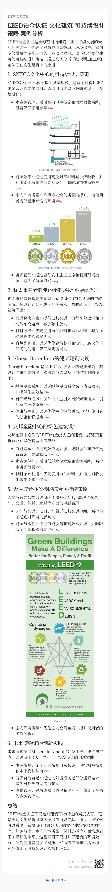
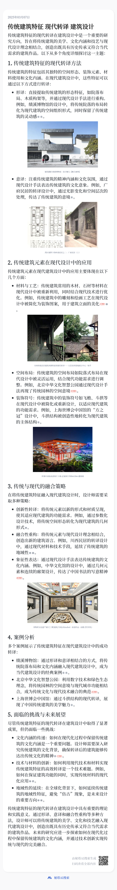

获奖案例分析长图
概述
本案例展示如何利用AI工具完成建筑设计概念提案创作。工作流包含实际案例和示意性的AI辅助制作步骤。在具体工作中需要根据具体需求进行调整和深化才能达到最好的效果。
设计流程展示
某城市文化中心建筑设计竞赛方案（包含建筑效果图、空间分析、可持续设计说明）
项目背景（虚构）：
某市发布2025年城市文化中心建筑设计国际竞赛公告。项目位于市中心核心区域，紧邻中央公园和艺术区，占地面积约20000平方米。建筑定位为城市标志性公共文化建筑，主要功能包括4000㎡可变展厅、800座大剧场和300座小剧场、3000㎡图书馆（含数字阅览区和开放阅读区），以及入口大厅、文创商店、咖啡厅等配套设施。设计需重点考虑当地传统建筑元素与现代设计语言的融合，达到LEED铂金级认证标准，并整合智能建筑管理系统。竞赛提交成果包括概念方案、效果图、分析图和技术说明。
制作流程：
-
案例研究与分析
使用工具：秘塔AI搜索
搜索策略：
基础案例搜索
关键词："文化建筑设计竞赛获奖案例 扎哈 隈研吾 文化中心 详细介绍"
搜索结果（点击展开）
可持续性案例搜索
关键词："LEED铂金认证 文化建筑 可持续设计策略 案例分析"
搜索结果（点击展开）
LEED认证案例分析长图
本地文化元素搜索
关键词："[城市名]传统建筑特征 现代转译 建筑设计"
搜索结果（点击展开）
传统建筑元素分析长图
-
概念方案生成
使用工具：Deepseek
提示词策略：采用分步骤、结构化的提示方式，并将前述案例分析结果作为参考输入
第一阶段：设计理念生成
作为一位经验丰富的建筑师，请基于以下项目条件和案例分析结果生成设计理念。我已经上传了三组案例分析结果，包括近期获奖案例、LEED认证案例和本地建筑特征分析，请参考这些内容进行设计：[上传案例分析结果] 1. 项目背景：[项目详细信息] 2. 设计要求：[具体要求] 请从以下几个方面阐述设计理念： 1. 场地响应策略 2. 文化符号提取与转译 3. 空间序列构思 4. 可持续设计策略 5. 创新亮点Deepseek回答 - 设计理念（点击展开）
设计理念："文化绿洲·未来共生"
以在地文化传承、生态可持续、智能交互为核心，打造一座兼具历史温度与未来科技感的城市文化地标。
1. 场地响应策略
自然与城市的过渡
- 建筑形体沿中央公园轴线延伸，采用退台式阶梯设计
- 形成"城市客厅"与"公园绿廊"的视觉通廊
- 入口大厅采用全玻璃幕墙，模糊室内外界限，将公园景观引入建筑内部
交通与功能整合
- 地下层：公共交通接驳点（含地铁出口）
- 地面层：自行车停放区与电动汽车充电桩
- 屋顶层：步行天桥连接艺术区，形成"零碳动线"
2. 文化符号提取与转译
形译与意译结合
提取本地传统建筑中的坡屋顶、院落布局、木构架元素，通过参数化设计转化为现代几何语言：
- 屋顶：以动态折叠金属板重构传统坡屋顶形态，形成光影交错的立面肌理
- 院落：将传统"四合院"转译为三个中庭（展厅、剧场、图书馆），通过玻璃连廊串联，形成"院中有院"的空间层次
- 材料：本土木材与再生混凝土结合，立面嵌入传统纹样的激光镂空铝板，兼顾文化隐喻与节能性能
3. 空间序列构思
起承转合的诗意叙事：
- 起：入口大厅以"文化长卷"为概念，通过弧形坡道引导访客进入，顶部设置LED动态屏投射本土文化影像
- 承：中庭作为核心枢纽，连接展厅、剧场与图书馆，采用悬浮式楼梯与空中廊桥增强空间流动性
- 转：大剧场内部以"折纸"为灵感，通过可变形声学墙面适应不同演出需求
- 合：屋顶花园与中央公园无缝衔接，设置露天剧场和阅读亭，形成"城市文化阳台"
4. 可持续设计策略
LEED铂金级技术集成：
- 能源：屋顶光伏板+立面光伏玻璃提供30%能源，地源热泵系统调节温控
- 水循环：雨水收集系统用于绿化灌溉与冲厕，中水回用率达80%
- 材料：80%混凝土为再生骨料，钢结构可拆卸设计便于未来改造
- 室内环境：CO₂浓度监测与新风联动系统，确保空气质量优于ASHRAE标准
- 智能管理：BIM平台整合能耗、安防、人流数据，AI算法优化设备运行效率
5. 创新亮点
- 模块化可变展厅：采用可升降地面与移动隔墙系统，4小时内完成从"艺术展"到"沉浸式戏剧空间"的转换
- 文化交互界面：图书馆数字阅览区设AR互动墙，访客可通过手势"翻阅"本地历史文献
- 生态表皮：立面集成垂直绿化与光伏板，随季节变化调节开合角度，形成"会呼吸的建筑"
总结
本案以"传统基因的科技转译"与"零碳智慧运营"为双核驱动，通过空间叙事、技术赋能、文化共鸣，重塑城市公共文化空间的未来范式。既致敬历史，亦对话未来，成为市民心中的"精神灯塔"与全球可持续建筑的标杆之作。
第二阶段：功能分区规划
基于前述设计理念，请详细规划建筑的功能分区，图片使用mermaid表达： 1. 空间需求： - 展览空间：4000㎡可变展厅 - 剧场：800座大剧场，300座小剧场 - 图书馆：3000㎡（含数字阅览区） - 配套设施：入口大厅、文创商店、咖啡厅 请提供： 1. 垂直功能分区策略 2. 水平功能关系图 3. 公共空间组织逻辑 4. 交通流线分析 5. 设备与后勤空间布局Deepseek回答 - 功能分区（点击展开）
建筑功能分区与流线分析
垂直功能分区策略
%% 垂直功能分区策略 graph TD subgraph 地下层B2-B1 B2[设备层：能源中心/中水处理/机房] B1[后勤层：装卸区/仓库/员工更衣室] end subgraph 地面层L1 L1A[入口大厅/文创商店/咖啡厅] L1B[小剧场(300座)/票务中心] L1C[图书馆入口] end subgraph 中层L2-L3 L2A[可变展厅(2000㎡)] L2B[大剧场(800座)观众厅] L3A[可变展厅(2000㎡)] L3B[大剧场舞台区] L3C[图书馆开放阅读区] end subgraph 高层L4-L5 L4[图书馆数字阅览区/研究室] L5[行政办公/会议中心] end subgraph 屋顶层 RT[屋顶花园/露天剧场/光伏矩阵] end B1 -->|垂直货梯| L3B L1A -->|主中庭| L2A L3C -->|景观楼梯| RT水平功能关系
%% 水平功能关系图 flowchart LR subgraph 核心筒 CT[中庭：文化长卷LED屏/悬浮楼梯] end CT -->|东翼| EX[可变展厅] CT -->|西翼| LIB[图书馆] CT -->|北翼| TH[大剧场] CT -->|南翼| EN[入口大厅] EN --> CR[文创商店] EN --> CF[咖啡厅] TH --> ST[小剧场] LIB --> DR[数字阅览区] EX --> MT[模块化隔墙系统]公共空间组织
%% 公共空间组织逻辑 graph TB EN[入口大厅] -->|文化长卷坡道| CT[中央中庭] CT -->|玻璃连廊| EX[展厅中庭] CT -->|空中廊桥| TH[剧场前厅] CT -->|景观楼梯| LIB[图书馆中庭] LIB -->|屋顶连桥| RT[屋顶花园] style CT fill:#f9d5e5,stroke:#333 style EX fill:#e3f2fd,stroke:#333 style RT fill:#c8e6c9,stroke:#333交通流线分析
%% 交通流线分析 flowchart TD subgraph 公众流线 PL[主入口] --> CT[中庭] CT --> TH[剧场] & EX[展厅] & LIB[图书馆] LIB --> RT[屋顶花园] EX --> CF[咖啡厅] end subgraph 后勤流线 SL[服务入口] --> B1[装卸区] B1 -->|专用电梯| ST[剧场后台] & EX[展厅库房] end subgraph 紧急流线 EM[疏散楼梯] -->|每50m设置| EX[展厅出口] EM --> TH[剧场出口] EM --> LIB[图书馆出口] end设备与后勤空间布局
%% 设备与后勤空间布局 graph LR subgraph 地下层 B2[能源中心] -->|管道井| PV[光伏配电] B2 --> GS[地源热泵井群] B1[中水处理] --> RW[雨水回收池] end subgraph 地面层 L1[票务后台] --> TC[票务系统机房] L1 --> ST[剧场控制室] end subgraph 设备夹层 MZ[空调机组] -->|风管| CT[中庭] MZ --> TH[剧场新风系统] EL[智能电井] -->|光纤| BM[BIM管理平台] end subgraph 屋顶层 RT[光伏矩阵] --> IN[逆变器室] RT --> IG[智能灌溉控制] end设计说明
- 垂直分区：地下层集中设备与后勤，地面层承载高流量公共功能，中层为文化展示核心区，高层保留安静阅读空间，屋顶整合生态与能源系统。
- 水平关系：以中庭为枢纽，形成"十字型"功能辐射布局，确保各区域可达性与视觉连贯性。
- 公共空间：通过"文化长卷-中庭-屋顶花园"三级空间序列，强化场所精神与空间叙事性。
- 交通组织：采用立体分流策略，公众流线与后勤流线完全分离，紧急疏散满足双向逃生要求。
- 设备布局：遵循"就近服务"原则，主要技术用房布置在地下与屋顶层，通过BIM平台实现智能运维。
第三阶段：可持续性策略
针对LEED铂金级认证要求，详细说明建筑的可持续性策略： 1. 能源与大气： - 建筑节能措施 - 可再生能源利用 - 自然通风策略 2. 水资源利用： - 雨水收集系统 - 中水回用方案 - 节水器具选择 3. 材料与资源： - 本地材料使用 - 可回收材料应用 - 废弃物管理 4. 室内环境： - 自然采光优化 - 室内空气质量 - 声环境控制Deepseek回答 - 可持续策略（点击展开）
可持续性策略详述（LEED铂金级认证标准）
通过全方位的可持续设计策略，实现建筑全生命周期的低碳环保运营。
1. 能源与大气
建筑节能措施
- 超低能耗围护结构：采用三层中空Low-E玻璃幕墙（U值≤0.3 W/m²·K），外墙保温层厚度≥150mm（导热系数≤0.03 W/m·K），整体节能率较ASHRAE 90.1基准提升45%
- 智能能源管理：通过BIM平台实时监测能耗，AI算法动态调节空调、照明系统；剧场采用辐射地板+置换新风复合温控技术，降低30%空调负荷
可再生能源利用
- 光伏一体化设计：屋顶铺设单晶硅光伏板（效率≥22%），立面采用光伏玻璃幕墙（透光率40%），总装机容量520kW，满足建筑30%用电需求
- 地源热泵系统：埋设120口垂直地埋管（深度100m），提供60%采暖与制冷能源，全年能效比（COP）达4.8
自然通风策略
- 被动式风道设计：中庭顶部设置可开启天窗，结合立面镂空铝板导风槽，利用热压差形成"烟囱效应"，过渡季自然通风覆盖率≥65%
- 智能通风调控：CO₂传感器联动电动百叶窗，优先使用自然通风，机械通风仅作为备用
2. 水资源利用
雨水收集系统
- 全场地渗透式设计：屋顶与硬质铺装区域设置导水沟，雨水经生物滞留池过滤后存入地下蓄水池（容量200m³），用于绿化灌溉与冲厕，年节水率40%
中水回用方案
- 灰水循环系统：洗手台、淋浴间废水经MBR膜生物反应器处理，达到《城市污水再生利用城市杂用水水质标准》（GB/T 18920），回用于冲厕与冷却塔补水，回用率85%
节水器具选择
- 超低流量设备：选用一级水效认证产品，如感应式水龙头（流量≤4L/min）、双冲马桶（单次冲水量≤3.5L），较基准建筑节水50%
3. 材料与资源
本地材料使用
- 500km内材料占比：混凝土骨料（本地采石场）、木材（区域认证林场）等本地材料使用率达75%，减少运输碳排放
可回收材料应用
- 循环经济材料：钢结构（100%可回收）、再生混凝土（含30%建筑废料）、再生铝板（含50%废铝），全生命周期碳排放较传统材料降低35%
废弃物管理
- 施工阶段：制定零废弃计划，分类回收混凝土、金属、木材废料，废弃物填埋率≤10%
- 运营阶段：设置智能垃圾分类站，厨余垃圾就地堆肥，可回收物联网追溯管理
4. 室内环境
自然采光优化
- 动态采光设计：中庭顶部设置棱镜采光天窗，反射率≥90%，结合导光管将自然光引入深层空间，75%功能区域达到采光系数≥2%
- 智能遮阳系统：光伏玻璃幕墙集成电致变色膜，根据日照强度自动调节透光率，减少眩光与热辐射
室内空气质量
- 源头污染控制：所有内装材料通过GREENGUARD金级认证（TVOC≤50μg/m³），地毯、涂料等采用零甲醛配方
- 主动净化系统：新风机组配备MERV-14过滤网+UV光催化模块，PM2.5净化效率≥95%，每小时换气2次
声环境控制
- 剧场声学优化：采用可变吸声墙面（NRC≥0.85）+弹性浮筑地板（隔声量≥55dB），背景噪声≤NR-25曲线
- 图书馆隔音设计：阅读区与公共走廊间设置双层石膏板墙（STC≥60），地面铺设软木地板（IIC≥60）
LEED得分亮点
- 能源与大气：通过节能设计+可再生能源实现能耗降低52%（EAp2优化能耗性能，+18分）
- 水资源：中水回用+雨水管理满足WEc1-3全部要求（+11分）
- 材料与资源：本地材料+循环材料贡献MRc2-5核心得分（+15分）
- 室内环境：采光与空气品质达标EQc1-8（+12分）
总预估得分：92/110（铂金级认证阈值≥80分）
-
建筑效果图生成
使用工具：Midjourney
-
方案汇报PPT制作
使用工具：Kimi AI PPT
提示词策略：结构化的演示文稿规划
请为城市文化中心建筑设计方案制作一份完整的汇报PPT，具体要求如下： 1. 演示结构： - 封面：项目名称、团队信息、效果图预览 - 目录：清晰的章节导航 - 项目背景：竞赛要求、场地分析 - 设计理念：概念发展过程、文化元素提取 - 方案展示：平面、立面、剖面、效果图 - 技术创新：可持续性策略、智能化系统 - 结语：项目亮点总结 2. 设计风格： - 视觉风格：现代简约，突出建筑特色 - 配色方案：使用项目建筑主色调 - 版式设计：清晰的层级结构 - 图文比例：以图为主，文字精炼 3. 内容要求： - 每页限制文字量：不超过50字 - 重要数据可视化处理 - 图表配有简要说明 - 重点内容动态呈现 4. 辅助说明： - 提供演讲者注释 - 标注关键设计点 - 添加比例尺参考 - 包含技术指标说明Kimi PPT大纲生成结果（点击展开）
城市文化中心建筑设计方案汇报
封面
- 项目名称：[城市文化中心名称]
- 团队信息：[设计团队名称]
- 效果图预览：展示建筑整体效果图
目录
- 项目背景
- 设计理念
- 方案展示
- 技术创新
- 结语
项目背景
竞赛要求
- 满足多样化功能需求，涵盖展览、表演、教育等
- 与城市整体规划相协调，体现地方特色
- 注重可持续发展，融入绿色建筑理念
场地分析
- 地理位置优越，交通便利，周边配套设施完善
- 场地周边自然环境优美，临近公园或水系
- 地形地貌平坦，利于建筑布局与空间组织
设计理念
概念发展过程
- 从城市文化脉络中汲取灵感，结合现代建筑语汇
- 运用数字化设计工具，优化空间形态与功能布局
- 通过多轮方案比选，确定最终设计方向
文化元素提取
- 提取当地传统建筑元素，如屋顶形式、装饰图案等
- 融入地方文化符号，体现地域文化特色
- 以现代设计手法重新诠释传统文化，使其更具时代感
方案展示
平面
- 各功能区域布局合理，流线清晰，避免相互干扰
- 公共空间宽敞明亮，利于举办各类文化活动
- 灵活划分空间，满足不同规模活动需求
立面
- 立面造型简洁大气，富有现代感
- 采用虚实结合的设计手法，营造丰富的光影效果
- 选用与周边环境相协调的建筑材料与色彩
剖面
- 合理组织建筑内部空间高度，满足不同功能需求
- 确保良好的自然通风与采光条件
- 剖面设计体现建筑的层次感与空间序列
效果图
- 展示建筑整体效果，突出建筑特色与周边环境融合
- 局部效果图展示建筑细节，如入口、广场等
- 室内效果图呈现内部空间氛围与功能布局
技术创新
可持续性策略
- 采用高效保温隔热材料，降低建筑能耗
- 设置太阳能光伏发电系统，提供部分能源
- 应用雨水收集与中水回用技术，节约水资源
智能化系统
- 建立智能安防系统，保障建筑安全
- 配置智能照明与空调控制系统，实现节能运行
- 利用智能导览系统，提升用户体验
结语
项目亮点总结
- 独特的建筑造型与文化内涵，成为城市新地标
- 多功能空间布局满足多样化文化活动需求
- 先进的技术应用，体现可持续发展理念
推荐工具
- Midjourney：建筑效果图生成
- Deepseek：设计理念和分析生成
- Kimi：方案汇报PPT制作
- 秘塔搜索：案例研究与分析